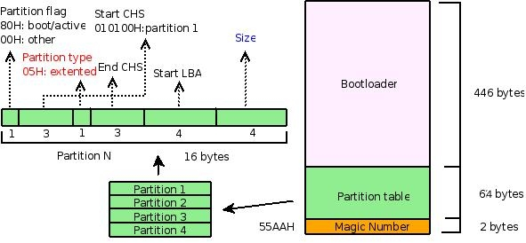

文件系統操作
- 前言
- 文件系統在 Linux 操作系統中的位置
- 硬件管理和設備驅動
- 理解、查看磁盤分區
- 分區和文件系統的關係
- 分區、邏輯卷和文件系統的關係
- 文件系統的可視化結構
- 如何製作一個文件系統
- 如何開發自己的文件系統
- 後記
前言
準備了很久，找了好多天資料，還不知道應該如何動筆寫：因為擔心拿捏不住，所以一方面繼續查找資料，一方面思考如何來寫。作為《Shell編程範例》的一部分，希望它能夠很好地幫助 Shell 程序員理解如何用 Shell 命令來完成和 Linux 系統關係非常大的文件系統的各種操作，希望讓 Shell 程序員中對文件系統"混沌"的狀態從此消失，希望文件系統以一種更為清晰的樣子呈現在眼前。
文件系統在 Linux 操作系統中的位置
如何來認識文件系統呢？從 Shell 程序員的角度來看，文件系統就是一個用來組織各種文件的方法。但是文件系統無法獨立於硬件存儲設備和操作系統而存在，因此還是有必要來弄清楚硬件存儲設備、分區、操作系統、邏輯卷、文件系統等各種概念之間的聯繫，以便理解文件系統常規操作的一些“細節”。這個聯繫或許（也許會有一些問題）可以通過這樣一種方式來呈現：

從圖中可以清晰地看到各個“概念”之間的關係，它們以不同層次分佈，覆蓋硬件設備、系統內核空間、系統用戶空間。在用戶空間，用戶可以不管內核如何操作具體硬件設備，僅僅使用程序員設計的各種界面就可以，而普通程序員也僅僅需要利用內核提供的各種接口（System Call）或者一些C庫來和內核進行交互，而無須關心具體的實現細節。不過對於操作系統開發人員，他們需要在內核空間設計特定的數據結構來管理和組織底層的硬件設備。
下面從下到上的方式（即從底層硬件開始），用工具來分析和理解圖中幾個重要概念。（如果有興趣，可以先看看下面的幾則資料）
參考資料：
硬件管理和設備驅動
Linux 系統通過設備驅動管理硬件設備。如果添加了新的硬件設備，那麼需要編寫相應的硬件驅動來管理它。對於一些常見的硬件設備，系統已經自帶了相應的驅動，編譯內核時，選中它們，然後編譯成內核的一部分或者以模塊的方式編譯。如果以模塊的方式編譯，那麼可以在系統的 /lib/modules/$(uname -r)目錄下找到對應的模塊文件。
範例：查找設備所需的驅動文件
比如，可以這樣找到相應的 scsi 驅動和 usb 驅動對應的模塊文件：
更新系統中文件索引數據庫(有點慢）
$ updatedb
查找 scsi 相關的驅動
$ locate scsi*.ko
查找 usb 相關的驅動
$ locate usb*.ko
這些驅動以 .ko 為後綴，在安裝系統時默認編譯為了模塊。實際上可以把它們編譯為內核的一部分，僅僅需要在編譯內核時選擇為[*]即可。但是，很多情況下會以模塊的方式編譯它們，這樣可以減少內核的大小，並根據需要靈活地加載和卸載它們。下面簡單地演示如何卸載模塊、加載模塊以及查看已加載模塊的狀態。
可通過 /proc 文件系統的 modules 文件檢查內核中已加載的各個模塊的狀態，也可以通過 lsmod 命令直接查看它們。
$ cat /proc/modules
或者
$ lsmod
範例：查看已經加載的設備驅動
查看 scsi 和 usb 相關驅動，結果各列為模塊名、模塊大小、被其他模塊的引用情況（引用次數、引用它們的模塊）
$ lsmod | egrep "scsi|usb"
usbhid 29536 0
hid 28928 1 usbhid
usbcore 138632 4 usbhid,ehci_hcd,ohci_hcd
scsi_mod 147084 4 sg,sr_mod,sd_mod,libata
範例：卸載設備驅動
下面卸載 usbhid 模塊看看（不要卸載scsi的驅動！因為你的系統可能就跑在上面，如果確實想玩玩，卸載前記得保存數據），通過 rmmod 命令就可以實現，先切換到 Root 用戶：
$ sudo -s
# rmmod usbhid
再查看該模塊的信息，已經看不到了吧
$ lsmod | grep ^usbhid
範例：掛載設備驅動
如果有個 usb 鼠標，那麼移動一下，是不是發現動不了啦？因為設備驅動都沒有了，設備自然就沒法用羅。不過不要緊張，既然知道原因，那麼重新加載驅動就可以，下面用 insmod 把 usbhid 模塊重新加載上。
$ sudo -s
# insmod `locate usbhid.ko`
locate usbhid.ko 是為了找出 usbhid.ko 模塊的路徑，如果之前沒有 updatedb，估計用它是找不到了，不過也可以直接到 /lib/modules 目錄下用 find 把 usbhid.ko 文件找到。
# insmod $(find /lib/modules -name "*usbhid.ko*" | grep `uname -r`)
現在鼠標又可以用啦，不信再動一下鼠標 :-)
到這裡，硬件設備和設備驅動之間關係應該是比較清楚了。如果沒有，那麼繼續下面的內容。
範例：查看設備驅動對應的設備文件
Linux 設備驅動關聯著相應的設備文件，而設備文件則和硬件設備一一對應。這些設備文件都統一存放在系統的 /dev/ 目錄下。
例如，scsi 設備對應/dev/sda，/dev/sda1，/dev/sda2... 下面查看這些設備信息。
$ ls -l /dev/sda*
brw-rw---- 1 root disk 8, 0 2007-12-28 22:49 /dev/sda
brw-rw---- 1 root disk 8, 1 2007-12-28 22:50 /dev/sda1
brw-rw---- 1 root disk 8, 3 2007-12-28 22:49 /dev/sda3
brw-rw---- 1 root disk 8, 4 2007-12-28 22:49 /dev/sda4
brw-rw---- 1 root disk 8, 5 2007-12-28 22:50 /dev/sda5
brw-rw---- 1 root disk 8, 6 2007-12-28 22:50 /dev/sda6
brw-rw---- 1 root disk 8, 7 2007-12-28 22:50 /dev/sda7
brw-rw---- 1 root disk 8, 8 2007-12-28 22:50 /dev/sda8
可以看到第一列第一個字符都是 b，第五列都是數字 8 。 b 表示該文件是一個塊設備文件，對應地，如果是 c 則表示字符設備（例如 `/dev/ttyS0)，關於塊設備和字符設備的區別，可以看這裡：
- 字符設備：字符設備就是能夠像字節流一樣訪問的設備，字符終端和串口就屬於字符設備。
- 塊設備：塊設備上可以容納文件系統。與字符設備不同，在讀寫時，塊設備每次只能傳輸一個或多個完整的塊。在 Linux 操作系統中，應用程序可以像訪問字符設備一樣讀寫塊設備（一次讀取或寫入任意的字節數據）。因此，塊設備和字符設備的區別僅僅是在內核中對於數據的管理不同。
數字 8 則是該硬件設備在內核中對應的設備編號，可以在內核的 Documentation/devices.txt 和 /proc/devices 文件中找到設備號分配情況。但是為什麼同一個設備會對應不同的設備文件（/dev/sda 後面為什麼還有不同的數字，而且 ls 結果中的第 6 列和它們對應起來）。這實際上是為了區分不同設備的不同部分。對於硬盤，這樣可以處理硬盤內部的不同分區。就內核而言，它僅僅需要通過第 5 列的設備號就可以找到對應的硬件設備，但是對於驅動模塊來說，它還需要知道如何處理不同的分區，於是就多了一個輔設備號，即第 6 列對應的內容。這樣一個設備就有了主設備號（第 5 列）和輔設備號（第 6 列），從而方便地實現對各種硬件設備的管理。
因為設備文件和硬件是對應的，這樣可以直接從 /dev/sda （如果是 IDE 的硬盤，那麼對應的設備就是 /dev/hda 啦）設備中讀出硬盤的信息，例如：
範例：訪問設備文件
用 dd 命令複製出硬盤的前 512 個字節，要 Root 用戶
$ sudo dd if=/dev/sda of=mbr.bin bs=512 count=1
用 file 命令查看相應的信息
$ file mbr.bin
mbr.bin: x86 boot sector, LInux i386 boot LOader; partition 3: ID=0x82, starthead 254, startsector 19535040, 1959930 sectors; partition 4: ID=0x5, starthead 254, startsector 21494970, 56661255 sectors, code offset 0x48
也可以用 od 命令以 16 進制的形式讀取並進行分析
$ od -x mbr.bin
bs 是塊的大小（以字節 bytes 為單位），count 是塊數
因為這些信息並不直觀（而且下面會進一步深入分析），那麼先來看看另外一個設備文件，將可以非常直觀地演示設備文件和硬件的對應關係。還是以鼠標為例吧，下面來讀取鼠標對應的設備文件的信息。
$ sudo -s
# cat /dev/input/mouse1 | od -x
你的鼠標驅動可能不太一樣，所以設備文件可能是其他的，但是都會在 /dev/input 下。
移動鼠標看看，是不是發現有不同信息輸出。基於這一原理，我們經常通過在一端讀取設備文件 /dev/ttyS0 中的內容，而在另一端往設備文件 /dev/ttyS0 中寫入內容來檢查串口線是否被損壞。
到這裡，對設備驅動、設備文件和硬件設備之間的關聯應該是印象更深刻了。如果想深入瞭解設備驅動的工作原理和設備驅動的編寫，那麼看看下面列出的相關資料，開始設備驅動的編寫歷程吧。
參考資料：
- Compile linux kernel 2.6
- Linux 系統的硬件驅動程序編寫原理
- Linux 下 USB設備的原理、配置、常見問題
- The Linux Kernel Module Programming Guide
- Linux 設備驅動開發
理解、查看磁盤分區
實際上內存、u 盤等都可以作為文件系統底層的“存儲”設備，但是這裡僅用硬盤作為實例來介紹磁盤和分區的關係。
目前 Linux 的分區依然採用第一臺PC硬盤所使用的分區原理，下面逐步分析和演示這一分區原理。
磁盤分區基本原理
先來看看幾個概念：
設備管理和分區
Linux 下，每一個存儲設備對應一個系統的設備文件，對於硬盤等
IDE和SCSI設備，在系統的/dev目錄下可以找到對應的包含字符hd和sd的設備文件。而根據硬盤連接的主板設備接口和數據線接口的不同，在hd或者sd字符後面可以添加一個從a到z的字符，例如hda，hdb，hdc和sda，sdb，sdc等，另外為了區別同一個硬件設備的不同分區，在後面還可以添加了一個數字，例如hda1，hda2，hda3和sda1，sda2，sda3，所以在/dev目錄下，可以看到很多類似的設備文件。各分區的作用
在分區時常遇到主分區和邏輯分區的問題，這實際上是為了方便擴展分區，正如後面的邏輯卷的引入是為了更好地管理多個硬盤一樣，引入主分區和邏輯分區可以方便地進行分區的管理。
Linux 系統中每一個硬盤設備最多由 4 個主分區（包括擴展分區）構成。
主分區的作用是計算機用來進行啟動操作系統的，因此每一個操作系統的啟動程序或者稱作是引導程序，都應該存放在主分區上。 Linux 規定主分區（或者擴展分區）佔用分區編號中的前 4 個。所以會看到主分區對應的設備文件為 /dev/hda1-4 或者 /dev/sda1-4，而不會是 hda5 或者 sda5 。
擴展分區則是為了擴展更多的邏輯分區的，在 Linux 下，邏輯分區佔用了 hda5-16 或者 sda5-16 等 12 個編號。
- 分區類型
它規定了這個分區上的文件系統的類型。Linux支持諸如msdoc,vfat,ext2,ext3等諸多的文件系統類型，更多信息在下一小節進行進一步的介紹。
通過分析 MBR 來理解分區原理
下面通過分析硬盤的前 512 個字節（即 MBR）來分析和理解分區。
先來看看這張圖：

它用來描述 MBR 的結構。 MBR 包括引導部分、分區表、以及結束標記 `(55AAH)，分別佔用了 512 字節中 446 字節、 64 字節和 2 字節。這裡僅僅關注分區表部分，即中間的 64 字節以及圖中左邊的部分。
由於我用的是 SCSI 的硬盤，下面從 /dev/sda 設備中把硬盤的前 512 個字節拷貝到文件 mbr.bin 中。
$ sudo -s
# dd if=/dev/sda of=mbr.bin bs=512 count=1
下面用 file，od，fdisk 等命令來分析這段 MBR 的數據，並對照上圖以便加深理解。
$ file mbr.bin
mbr.bin: x86 boot sector, LInux i386 boot LOader; partition 3: ID=0x82, starthead 254, startsector 19535040, 1959930 sectors; partition 4: ID=0x5, starthead 254, startsector 21494970, 56661255 sectors, code offset 0x48
$ od -x mbr.bin | tail -6 #僅關注中間的64字節，所以截取了結果中後6行
0000660 0000 0000 0000 0000 a666 a666 0000 0180
0000700 0001 fe83 ffff 003f 0000 1481 012a 0000
0000720 0000 0000 0000 0000 0000 0000 0000 fe00
0000740 ffff fe82 ffff 14c0 012a e7fa 001d fe00
0000760 ffff fe05 ffff fcba 0147 9507 0360 aa55
$ sudo -s
# fdisk -l | grep ^/ #僅分析MBR相關的部分，不分析邏輯分區部分
/dev/sda1 * 1 1216 9767488+ 83 Linux
/dev/sda3 1217 1338 979965 82 Linux swap / Solaris
/dev/sda4 1339 4865 28330627+ 5 Extended
file 命令的結果顯示，剛拷貝的 512 字節是啟動扇區，用分號分開的幾個部分分別是 bootloader，分區 3 和分區 4 。分區 3 的類型是 82，即 swap 分區（可以通過 fdisk 命令的 l 命令列出相關信息），它對應 fdisk 的結果中 /dev/sda3 所在行的第 5 列，分區 3 的扇區數是 1959930，轉換成字節數是 1959930\*512 （目前，硬盤的默認扇區大小是 512 字節），而 swap 分區的默認塊大小是 1024 字節，這樣塊數就是 :
$ echo 1959930*512/1024 | bc
979965
正好是 fdisk 結果中 /dev/sda3 所在行的第四列對應的塊數，同樣地，可以對照 fdisk 和 file 的結果分析分區 4 。
再來看看 od 命令以十六進制顯示的結果，同樣考慮分區 3，計算一下發現，分區 3 對應的 od 命令的結果為：
fe00 ffff fe82 ffff 14c0 012a e7fa 001d
首先是分區標記，00H，從上圖中，看出它就不是引導分區（80H 標記的才是引導分區），而分區類型呢？為 82H，和 file 顯示結果一致，現在再來關注一下分區大小，即 file 結果中的扇區數。
$ echo "ibase=10;obase=16;1959930" | bc
1DE7FA
剛好對應 e7fa 001d，同樣地考慮引導分區的結果：
0180 0001 fe83 ffff 003f 0000 1481 012a
分區標記： 80H，正好反應了這個分區是引導分區，隨後是引導分區所在的磁盤扇區情況，010100，即 1 面 0 道 1 扇區。其他內容可以對照分析。
考慮到時間關係，更多細節請參考下面的資料或者查看看系統的相關手冊。
補充：安裝系統時，可以用 fdisk，cfdisk 等命令進行分區。如果要想從某個分區啟動，那麼需要打上 80H 標記，例如可通過 cfdisk 把某個分區設置為 bootable 來實現。
參考資料：
分區和文件系統的關係
在沒有引入邏輯卷之前，分區類型和文件系統類型幾乎可以同等對待，設置分區類型的過程就是格式化分區，建立相應的文件系統類型的過程。
下面主要介紹如何建立分區和文件系統類型的聯繫，即如何格式化分區為指定的文件系統類型。
常見分區類型
先來看看 Linux 下文件系統的常見類型（如果要查看所有 Linux 支持的文件類型，可以用 fdisk 命令的 l 命令查看，或者通過 man fs 查看，也可通過 /proc/filesystems 查看到當前內核支持的文件系統類型）
ext2，ext3，ext4：這三個是 Linux 根文件系統通常採用的類型swap：這個是實現 Linux 虛擬內存時採用的一種文件系統，安裝時一般需要建立一個專門的分區，並格式化為swap文件系統（如果想添加更多swap分區，可以參考本節的參考資料，熟悉dd，mkswap，swapon，swapoff等命令的用法）proc：這是一種比較特別的文件系統，作為內核和用戶之間的一個接口存在，建立在內存中（可以通過cat命令查看/proc系統下的文件，甚至可以通過修改/proc/sys下的文件實時調整內核配置，當前前提是需要把proc文件系統掛載上：mount -t proc proc /proc
除了上述文件系統類型外，Linux 支持包括 vfat，iso，xfs，nfs 在內各種常見的文件系統類型，在 Linux 下，可以自由地查看和操作 Windows 等其他操作系統使用的文件系統。
那麼如何建立磁盤和這些文件系統類型的關聯呢？格式化。
格式化的過程實際上就是重新組織分區的過程，可通過 mkfs 命令來實現，當然也可以通過 fdisk 等命令來實現。這裡僅介紹 mkfs，mkfs 可用來對一個已有的分區進行格式化，不能實現分區操作（如果要對一個磁盤進行分區和格式化，那麼可以用 fdisk）。格式化後，相應分區上的數據就會通過某種特別的文件系統類型進行組織。
範例：格式化文件系統
例如：把 /dev/sda9 分區格式化為 ext3 的文件系統。
$ sudo -s
# mkfs -t ext3 /dev/sda9
如果要列出各個分區的文件系統類型，那麼可以用 fdisk -l 命令。
更多信息請參考下列資料。
參考資料：
- Linux 下加載 swap 分區的步驟
- Linux 下 ISO 鏡像文件的製作與刻錄
- RAM 磁盤分區解釋: [1], [2]
- 高級文件系統實現者指南
分區、邏輯卷和文件系統的關係
上一節直接把分區格式化為某種文件系統類型，但是考慮到擴展新的存儲設備的需要，開發人員在文件系統和分區之間引入了邏輯卷。考慮到時間關係，這裡不再詳述，請參考資料：Linux 邏輯卷管理詳解
文件系統的可視化結構
文件系統最終呈現出來的是一種可視化的結構，可用ls,find,tree等命令把它呈現出來。它就像一顆倒掛的“樹”，在樹的節點上還可以掛載新的“樹”。
下面簡單介紹文件系統的掛載。
一個文件系統可以通過一個設備掛載（mount）到某個目錄下，這個目錄被稱為掛載點。有趣的是，在 Linux 下，一個目錄本身還可以掛載到另外一個目錄下，一個格式化了的文件也可以通過一個特殊的設備 /dev/loop 進行掛載（如 iso 文件）。另外，就文件系統而言，Linux 不僅支持本地文件系統，還支持遠程文件系統（如 nfs）。
範例：掛載文件系統
下面簡單介紹文件系統掛載的幾個實例。
- 根文件系統的掛載
掛載需要 Root 權限，例如，掛載系統根文件系統 /dev/sda1 到 /mnt
$ sudo -s
# mount -t ext3 /dev/sda1 /mnt/
查看 /dev/sda1 的掛載情況，可以看到，一個設備可以多次掛載
$ mount | grep sda1
/dev/sda1 on / type ext3 (rw,errors=remount-ro)
/dev/sda1 on /mnt type ext3 (rw)
對於一個已經掛載的文件系統，為支持不同屬性可以重新掛載
$ mount -n -o remount, rw /
- 掛載一個新增設備
如果內核已經支持 USB 接口，那麼插入 u 盤時，可以通過 dmesg 命令查看對應的設備號，並掛載它。
查看 dmesg 結果中的最後幾行內容，找到類似 /dev/sdN 的信息，找出 u 盤對應的設備號
$ dmesg
這裡假設 u 盤是 vfat 格式，以便在一些打印店裡的 Windows 上也可使用
# mount -t vfat /dev/sdN /path/to/mountpoint_directory
- 掛載一個 iso 文件或者是光盤
對於一些iso文件或者是 iso 格式的光盤，同樣可以通過 mount 命令掛載。
對於 iso 文件：
# mount -t iso9660 /path/to/isofile /path/to/mountpoint_directory
對於光盤：
# mount -t iso9660 /dev/cdrom /path/to/mountpoint_directory
- 掛載一個遠程文件系統
# mount -t nfs remote_ip:/path/to/share_directory /path/to/local_directory
- 掛載一個 proc 文件系統
# mount -t proc proc /proc
proc 文件系統組織在內存中，但是可以把它掛載到某個目錄下。通常把它掛載在 /proc 目錄下，以便一些系統管理和配置工具使用它。例如 top 命令用它分析內存的使用情況（讀取 /proc/meminfo 和 /proc/stat 等文件中的內容）； lsmod 命令通過它獲取內核模塊的狀態（讀取 /proc/modules）； netstat 命令通過它獲取網絡的狀態（讀取 /proc/net/dev 等文件）。當然，也可以編寫相關工具。除此之外，通過調整 /proc/sys 目錄下的文件，可以動態地調整系統配置，比如往 /proc/sys/net/ipv4/ip_forward 文件中寫入數字 1 就可以讓內核支持數據包轉發。（更多信息請參考 proc 的幫助，man
proc）
- 掛載一個目錄
$ mount --bind /path/to/needtomount_directory /path/to/mountpoint_directory
這個非常有意思，比如可以把某個目錄掛載到 ftp 服務的根目錄下，而無須把內容複製過去，就可以把相應目錄中的資源提供給別人共享。
範例：卸載某個分區
以上都只提到了掛載，那怎麼卸載呢？用 umount 命令跟上掛載的源地址或者掛載點（設備，文件，遠程目錄等）就可以。例如：
$ umount /path/to/mountpoint_directory
或者
$ umount /path/to/mount_source
如果想管理大量的或者經常性的掛載服務，那麼每次手動掛載是很糟糕的事情。這時就可利用 mount 的配置文件 /etc/fstab，把 mount 對應的參數寫到 /etc/fstab 文件對應的列中即可實現批量掛載（ mount -a ）和卸載（ umount -a ）。 /etc/fstab 中各列分別為文件系統、掛載點、類型、相關選項。更多信息可參考 fstab 的幫助（ man fstab ）。
參考資料：
如何製作一個文件系統
Linux 文件系統下有一些最基本的目錄，不同的目錄下存放著不同作用的各類文件。最基本的目錄有 /etc，/lib，/dev，/bin 等，它們分別存放著系統配置文件，庫文件，設備文件和可執行程序。這些目錄一般情況下是必須的，在做嵌入式開發時，需要手動或者是用 busybox 等工具來創建這樣一個基本的文件系統。這裡僅製作一個非常簡單的文件系統，並對該文件系統進行各種常規操作，以便加深對文件系統的理解。
範例：用 dd 創建一個固定大小的文件
還記得 dd 命令麼？就用它來產生一個固定大小的文件，這個為 1M(1024\*1024 bytes) 的文件
$ dd if=/dev/zero of=minifs bs=1024 count=1024
查看文件類型，這裡的 minifs 是一個充滿 \\0 的文件，沒有任何特定的數據結構
$ file minifs
minifs: data
說明： /dev/zero 是一個非常特殊的設備，如果讀取它，可以獲取任意多個 \\0 。
接著把該文件格式化為某個指定文件類型的文件系統。（是不是覺得不可思議，文件也可以格式化？是的，不光是設備可以，文件也可以以某種文件系統類型進行組織，但是需要注意的是，某些文件系統（如 ext3）要求被格式化的目標最少有 64M 的空間）。
範例：用 mkfs 格式化文件
$ mkfs.ext2 minifs
查看此時的文件類型，這時文件 minifs 就以 ext2 文件系統的格式組織了
$ file minifs
minifs: Linux rev 1.0 ext2 filesystem data
範例：掛載剛創建的文件系統
因為該文件以文件系統的類型組織了，那麼可以用 mount 命令掛載並使用它。
請切換到 root 用戶掛載它，並通過 -o loop 選項把它關聯到一個特殊設備 /dev/loop
$ sudo -s
# mount minifs /mnt/ -o loop
查看該文件系統信息，僅可以看到一個目錄文件 lost+found
$ ls /mnt/
lost+found
範例：對文件系統進行讀、寫、刪除等操作
在該文件系統下進行各種常規操作，包括讀、寫、刪除等。(每次操作前先把 minifs 文件保存一份，以便比較，結合相關資料就可以深入地分析各種操作對文件系統的改變情況，從而深入理解文件系統作為一種組織數據的方式的實現原理等)
$ cp minifs minifs.bak
$ cd /mnt
$ touch hello
$ cd -
$ cp minifs minifs-touch.bak
$ od -x minifs.bak > orig.od
$ od -x minifs-touch.bak > touch.od
創建一個文件後，比較此時文件系統和之前文件系統的異同
$ diff orig.od touch.od
diff orig.od touch.od
61,63c61,64
< 0060020 000c 0202 2e2e 0000 000b 0000 03e8 020a
< 0060040 6f6c 7473 662b 756f 646e 0000 0000 0000
< 0060060 0000 0000 0000 0000 0000 0000 0000 0000
---
> 0060020 000c 0202 2e2e 0000 000b 0000 0014 020a
> 0060040 6f6c 7473 662b 756f 646e 0000 000c 0000
> 0060060 03d4 0105 6568 6c6c 006f 0000 0000 0000
> 0060100 0000 0000 0000 0000 0000 0000 0000 0000
通過比較發現：添加文件，文件系統的相應位置發生了明顯的變化
$ echo "hello, world" > /mnt/hello
執行 sync 命令，確保緩存中的數據已經寫入磁盤（還記得本節圖 1 的 buffer cache 吧，這裡就是把 cache 中的數據寫到磁盤中）
$ sync
$ cp minifs minifs-echo.bak
$ od -x minifs-echo.bak > echo.od
寫入文件內容後，比較文件系統和之前的異同
$ diff touch.od echo.od
查看文件系統中的字符串
$ strings minifs
lost+found
hello
hello, world
刪除 hello 文件，查看文件系統變化
$ rm /mnt/hello
$ cp minifs minifs-rm.bak
$ od -x minifs-rm.bak > rm.od
$ diff echo.od rm.od
通過查看文件系統的字符串發現：刪除文件時並沒有覆蓋文件內容，所以從理論上說內容此時還是可恢復的
$ strings minifs
lost+found
hello
hello, world
上面僅僅演示了一些分析文件系統的常用工具，並分析了幾個常規的操作，如果想非常深入地理解文件系統的實現原理，請熟悉使用上述工具並閱讀相關資料。
參考資料：
- Build a mini filesystem in linux from scratch
- Build a mini filesystem in linux with BusyBox
- ext2 文件系統
如何開發自己的文件系統
隨著 fuse 的出現，在用戶空間開發文件系統成為可能，如果想開發自己的文件系統，那麼推薦閱讀：使用 fuse 開發自己的文件系統。
後記
- 2007 年 12 月 22 日，收集了很多資料，寫了整體的框架
- 2007 年 12 月 28 日下午，完成初稿，考慮到時間關係，很多細節也沒有進一步分析，另外有些部分可能存在理解上的問題，歡迎批評指正
- 2007 年 12 月 28 日晚，修改部分資料，並正式公開該篇文檔
- 29 號，添加設備驅動和硬件設備一小節